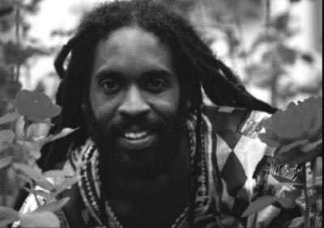
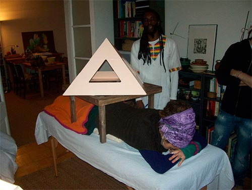
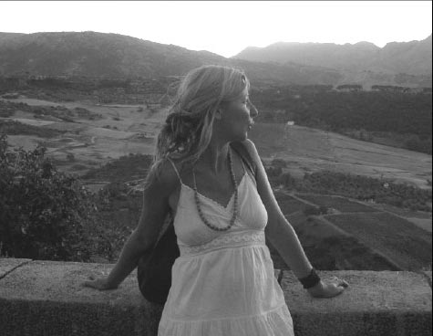

El cuerpo habla y se comunica por medio de signos y síntomas, dando a luz lo que está en la profundidad de nuestro ser.
El precioso mundo de la medicina holística tiene infinidad de herramientas terapéuticas con las que se diagnostica con tanta o mayor precisión que con los métodos de la medicina ortodoxa, pero también cuenta con medios para efectuar terapias libres de efectos nocivos. El primer precepto hipocrático "primum non lacere" (Lo primero es no dañar), se cumple con la misma seguridad que la recuperación del paciente.
Entre su arsenal de recursos terapéuticos, Karl y Ania cuentan con una pirámide modelo Horus y el conocimiento necesario para usarla correctamente, así como técnicas de comprobación de efectos por radiestesia.
La enfermedad no es más que un mecanismo de autorregulación; no el principio de un problema, sino el final de un proceso que se ha ido gestando hasta aparecer los síntomas. Mi trabajo como terapeuta consiste en armonizar la energía vital y reequilibrar balances perdidos, para que el paciente recupere su capacidad innata de autocuración, tratando el cuerpo como un conjunto complejo pero a la vez sencillo cuando se aborda su aspecto fisiológico y energético.
Después del reconocimiento de los signos y síntomas voy ampliando mi diagnóstico apoyándome en la lectura de zonas reflejas como pies, espalda o cara, así como de las predisposiciones reflejadas en el iris del paciente. El diagnóstico final se completa gracias a la radiestesia, ya que el péndulo me confirma las deducciones obtenidas para apreciar el funcionamiento del organismo a nivel bioquímico y energético (órganos, tejidos, células) a fin de entender al paciente como un todo, una unidad. Posteriormente planifico y combino tratamientos de naturaleza diferente pero a la vez complementarios para conseguir el equilibrio, el bienestar, la felicidad, la salud. Acostumbro empezar alineando los principales centros energéticos del paciente borrando informaciones traumáticas causadas por el estrés, los pensamientos negativos, las emociones y sentimientos no beneficiosos para la salud. Estas informaciones se adhieren a los cuerpos energéticos de la persona para expresarse más adelante como enfermedades en el cuerpo físico. Borrarlas equivale a hacer desaparecer la causa del desajuste. Gracias a las esencias de las flores del Dr. Bach se alcanza un equilibrio permanente. El siguiente paso es el reequilibrio del cuerpo a nivel bioquímico utilizando herramientas como la fitoterapia, la aromaterapia, la homeopatía y los nutrientes ortomoleculares (vitaminas, minerales, oligoelementos, aminoácidos, enzimas, etc.). Las terapias manuales como el masaje podal y facial, la acupresión (con aceites esenciales) y la osteopatía, acompañadas con reiki son esenciales para la relación entre el paciente y el terapeuta, que sirve de guía para que el organismo desajustado se autoregule. El poder armonizador y activador de las gemas y los imanes me ayuda a actuar energéticamente a nivel celular y conseguir así una mayor fluidez y armonía en el buen funcionamiento del organismo del paciente. Para complementar el tratamiento unas pautas nutricionales son claves para pasar de un estado de enfermedad a un estado de salud, confirmando la teoría que nuestros alimentos son nuestras medicinas. Para mí es importante acompañar al paciente en todo su proceso de autocuración, tomando a la vez medidas preventivas para el mantenimiento de su salud.
La calidad de nuestro nacimiento define la calidad de nuestra vida y nuestra sociedad.
Me conmueve acompañar a las personas hacia el centro de su verdadero ser. Este es para mí como terapeuta naturista y madre doula en proceso de formación, el camino hacia la salud, el bienestar y la armonía. La fuente de nuestra energía vital está dentro de nosotros y sólo tenemos que activar o recuperar la conexión con este sol personal que nos da vida y nos nutre. Una interferencia en este estado natural de armonía llamada enfermedad se convierte así en una oportunidad de crecimiento y nos ofrece un espacio para escucharnos con más atención. Puede llegar a ser la apertura hacia el camino del despertar. El cuerpo se comunica con nosotros a través de sentimientos, sensaciones y síntomas, pero hay que saber descifrar este lenguaje no verbal dejando de lado la mente puramente racional. Nosotros, todos los seres vivos, las piedras, el sol y la luna, las energías visibles y las energías no visibles formamos una Unidad Sagrada. Cuando nos encontramos en un estado de salud débil, los demás elementos de la naturaleza nos ayudan a recuperar nuestra vitalidad innata. Mi experiencia como terapeuta me ha brindado la posibilidad de comprobar que las plantas, las flores de Bach, las sales minerales, los aceites esenciales, los cristales, el barro, el sol, el agua etc., nos regalan su suave poder para catalizar nuestra sanación si sabemos identificar y escoger la energía adecuada que nos beneficia. Puedo decir que mi ética profesional es la protección de la vida desde el respeto de las leyes intrínsecas de la natura que somos y desde el acompañamiento individual hacia la autorregulación. Me encanta especialmente cuidar la salud de las mujeres y los niños que, por estar más cerca de la fuente de la vida, son muy intuitivos y fuertes, pero también a veces más vulnerables. Es importante saber valorar los síntomas de nuestro cuerpo físico para prevenir posibles desequilibrios del organismo en el futuro. El enfoque sólo puede ser holístico, tenemos que explorar nuevas vías, romper hábitos viejos y creencias anticuadas para conseguir una sanación completa y duradera.
Contacto
Información recopilada y adaptada desde fichas históricas de Piramicasa para conservar los datos en la web nueva.
Fuente original de referencia: https://www.piramicasa.es/es/terapeutas-holisticos-karl-y-ania.html